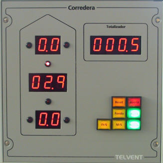
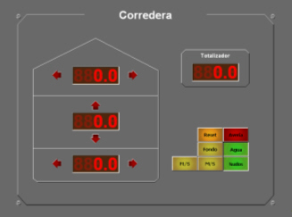

El módulo de Corredera simula una Corredera Doppler dotada de sensores transversales a proa y popa del buque así como de sensor de velocidad longitudinal, con posibilidad de indicar la velocidad con respecto al agua o al fondo y en diversas unidades de medida.
Este módulo puede ser real (hardware) o simulado (software).
Versión Hardware:

Versión Software:

En ambas versiones contiene los siguientes elementos:
- Indicador de Velocidad Transversal de Proa: indicador digital de dos cifras en el que se muestra la velocidad transversal de proa.
- Indicador de Proa a Babor / Estribor: se trata de dos LED rojos situados a izquierda y derecha del indicador de velocidad transversal de proa, que se encienden cuando el movimiento es hacia babor o estribor respectivamente.
- Indicador de Velocidad Longitudinal: indicador digital de dos cifras en el que se muestra la velocidad longitudinal.
- Indicador de Avante / Atrás: se trata de dos LED rojos situados a arriba y abajo del indicador de velocidad longitudinal, que se encienden cuando el movimiento es hacia avante o atrás respectivamente.
- Indicador de Velocidad Transversal de Popa: indicador digital de dos cifras en el que se muestra la velocidad transversal de popa.
- Indicador de Popa a Babor / Estribor: se trata de dos LED rojos situados a izquierda y derecha del indicador de velocidad transversal de popa, que se encienden cuando el movimiento es hacia babor o estribor respectivamente.
- Indicador de Totalizador: indicador digital de cuatro cifras en el que se muestra la distancia recorrida (en millas) obtenida de la corredera longitudinal o doppler, en función del modo seleccionado.
- Pulsador de Reset de Totalizador de corredera: cuando es pulsado realiza la puesta a cero del totalizador de corredera longitudinal o doppler, en función del modo seleccionado.
- Pulsador e Indicador de selección de Referencia Agua: cuando se pulsa, la velocidad se muestra con respecto al agua (modo longitudinal). El pulsador permanece encendido hasta que se cambie el modo de presentación.
- Pulsador e Indicador de selección de Referencia Fondo: cuando se pulsa, la velocidad se muestra con respecto al fondo (modo doppler). El pulsador permanece encendido hasta que se cambie el modo de presentación.
El pulsador de selección de referencia al fondo sólo funciona cuando el buque controlado se encuentra en aguas poco profundas. La profundidad máxima para que el sistema considere que las aguas son poco profundas es configurable y se define en el fichero del configuración del sistema.
Los dos pulsadores anteriores (Agua y Fondo) son excluyentes entre sí.
- Pulsador e Indicador de presentación de la Velocidad en Nudos: cuando se pulsa, la velocidad se muestra en nudos. El pulsador permanece encendido hasta que se cambie la unidad de presentación de la velocidad.
- Pulsador e Indicador de presentación de la Velocidad en M/S: cuando se pulsa, la velocidad se muestra en metros por segundo. El pulsador permanece encendido hasta que se cambie la unidad de presentación de la velocidad.
- Pulsador e Indicador de presentación de la Velocidad en Ft/S: cuando se pulsa, la velocidad se muestra en pies por segundo. El pulsador permanece encendido hasta que se cambie la unidad de presentación de la velocidad.
Los tres pulsadores anteriores (Nudos, M/S y Ft/S ) son excluyentes entre sí.
- Indicador de Avería: cuando el instructor introduce una avería en la corredera, este indicador se enciende de forma intermitente. Cuando el operador reconoce la avería, el indicador se ilumina de forma fija, y finalmente se apaga cuando el instructor elimina la condición de avería.
En la versión hardware los indicadores Reset de Totalizador, Agua, Fondo, Nudos, M/S y Ft/S actúan solo como indicadores y no pulsadores, es decir, no se pueden cambiar en este panel sino que se controlan desde un módulo de control asociado (ver apartado Consola de Gobierno - Control de Corredera).
Si la unidad controlada no dispone de corredera, este panel estará completamente apagado.